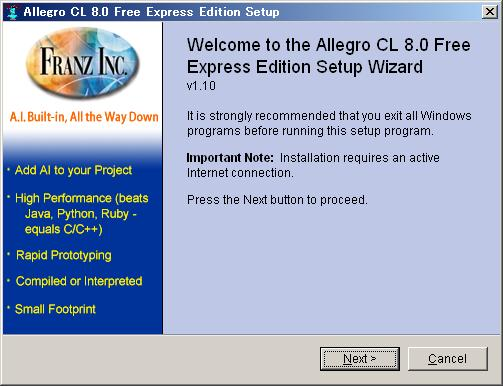
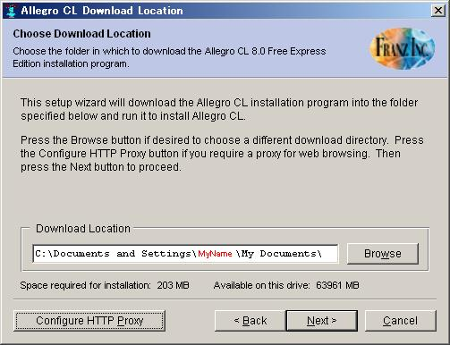
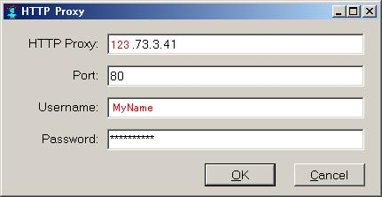
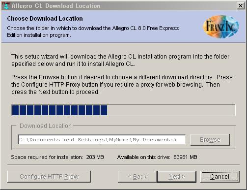
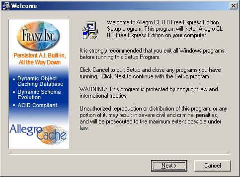
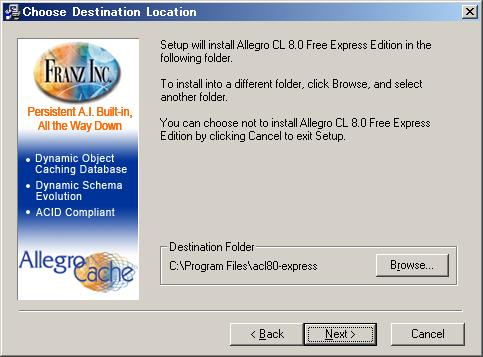
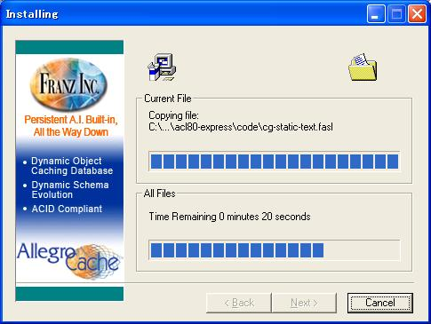
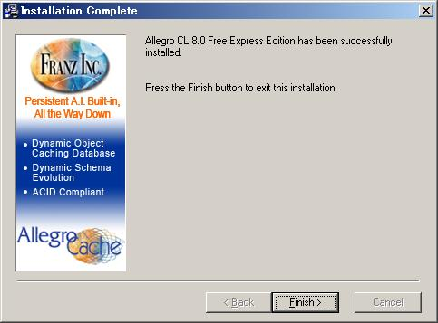
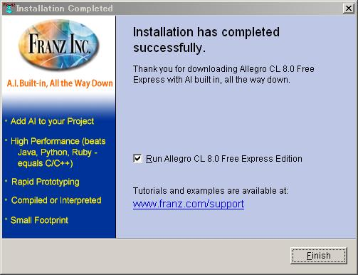
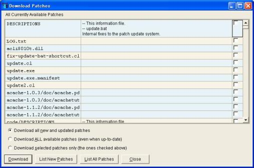

SWCLOS を使うために、この章ではまず最初に Allegro Common Lisp のお試し版のインストールを行います。
Franz社は Allegro Common Lisp のお試し版を無償で提供しています。このお試し版はヒープ領域の容量に制限があるだけで、
完全に有償の ACL と同じです。通常の使用ではまず問題がないでしょう。この章ではインストール後に、
シンボルの大文字小文字を区別しないANSI 仕様の ACL から、大文字小文字を区別する Modern ACL への変換も行います。
SWCLOS を使うには Modern Lisp への変換が必須です。
すでに正規の ACL を持っていらっしゃる方はこの章をスキップして下さい。すでに お試し版を持っているが
Modern Lisp を作成していない方は 2.3節から始めて下さい。
Franz社のダウンロードサイトhttp://www.franz.com/downloads/clp/survey>に行き、アンケートに答えて「Submit」を押すと契約書が長々と表示されます。「I agree」を選んで、ダウンロード画面に移り「here to DOWNLOAD」を押してインストーラをダウンロードします。
UNIXなどでは以下の手続きと異なりますが、ここではWindows版のダウンロードを例に説明します。Windows版以外の方は上記ダウンロードサイトからたどることのできる説明をよく読んでダウンロードを行ってください。
ダウンロードしたAllegro80Insaller.exeをダブルクリックし、実行を押すと次のような画面が現れます。

「Next」を押して現れるライセンスアグリーメントに「I accept ...」を選択し、「Next」を押します。すると次のようなダウンロード先選択画面が現れるので、ダウンロードする場所を指定します。デフォールトは「マイドキュメント」ですが、日本語のせいでダウンロード先が有効になっていない場合があります。そのときは「マイドキュメント」のかわりに「My Documents」を入れるか、「Browse」ボタンからたどってダウンロード先を指定します。ユーザ名が日本語のためにダウンロード先が有効になっていない場合は、実際のインストール先はあとで自由に選べますので、ここでは「マイドキュメント」のかわりに「All Users」を指定してもよいでしょう。
ここで「Next」を押す前に注意することがあります。企業の中のように、プロキシが設定してある環境では「Configure HTTP Proxy」ボタンを押して、プロキシの存在を教えてやります。

Allegro Common Lisp ダウンロード先選択画面
「Configure HTTP Proxy」ボタンを押した場合には、次のような画面でプロキシのIPアドレス、その他の情報を入力します。プロキシのIPアドレスはブラウザなどから簡単にわかります。たとえばIEならば、ツール｜インターネット オプション｜接続とメニュー選択します。「LANの設定」ボタンを押せば、プロキシ情報を見ることができます。ここでユーザ名やパスワードはあなたの ActiveDirectory におけるユーザ名とパスワードです。

Allegro Common Lisp ダウンロードプロキシ情報入力画面
「Next」を押すとダウンロードが始まります。

ダウンロードが終了すると次のようなインストールWelcome画面が現れます。

Allegro Common Lisp インストールWelcome画面
「Next」を押して次のようなインストール先選択画面でインストール先を選択します。

Allegro Common Lisp インストール先選択画面
通常はデフォールトのままで良いでしょう。「Next」を押します。「Select Program Manager Group」でデフォールトのまま、「Next」を押します。「Start Installation」画面が現れますので、「Netx>」を押します。次のような「Installing」画面でインストールが進みます。

Allegro Common Lisp Installing 画面
インストールが正常に終了すれば次の完了中画面が現れます。

Allegro Common Lisp インストール完了中画面
「Finish>」を押して一瞬「Now Installing」画面が表示されますが、すぐに次の完了画面に移ります。

Allegro Common Lisp インストール完了画面
Run Allegro のチェックボックスにチェックを入れたままにしておいて、「Finish」を押します。するとAllegro Common Lisp が走って次のような画面が表示されます。
Allegro Common Lisp Free Express 版では起動時に毎回このような有償版へのアップグレード画面がポップアップしますが、気にせずに「Continue」を押しましょう。
パッチあての画面がポップアップされているはずです。一番最初には必ずパッチを当てます。「List New Patches Now」を押します。するとACLがダウンロードすべきパッチを調べて、つぎのような画面を出します。

デフォールトの「Download all new and updated patches」を選択したまま、「Download」を押します。パッチのダウンロードが終了してもこれで終わりではありません。パッチが実際に当たったリスプイメージを作成するためにアップデートコマンドを実行します。
スタートメニューからプログラム選択でACLを選び、サブメニューにある update.exe を選んでアップデートを実行します。しばらく時間がかかりますが、終了すればインストールの一連の操作が終了です。
SWCLOS を使用するにはもう一つ大事なことが残っています。それはアルファベット大文字小文字を区別しない ANSI Lisp から大文字小文字を区別する Modern Lisp への変更です。
スタートメニューから通常のプログラムと同様にしてacl80-expressを走らせます。次のコードをコピー＆ペーストでLisp Listenerウィンドウ(Debug Window)に貼り付け、Enterを押して実行します。もし余分な改行が末尾に入ってしまったら、バックスペースで戻ってください。
(progn
(build-lisp-image "sys:allegro.dxl" :case-mode :case-sensitive-lower)
(when (probe-file "sys:allegro.exe") (delete-file "sys:allegro.exe"))
(sys:copy-file "sys:allegro-ansi.exe" "sys:allegro.exe"))
無事終了したら、C:\Program Files\acl80-express の直下に allegro-ansi.exe と一緒に allegro.exe ができているはずです。
スタートメニューから実行できるようにしましょう。C:\Document and Settings\All Users\スタートメニュー\プログラム\Allegro CL 8.0 Free Express Edition のショートカットを選んで同じフォルダ内にコピー＆ペーストします。新しく作成したショートカットのプロパティを開いて、リンク先の 「allegro-ansi.exe」を「allegro.exe」に直します。コメント欄の「ANSI」は「Modern」に直しましょう。「OK」を押して戻ったら、ショートカット名も適当な名前に変更します。「Modern ACL」などではいかがですか。今までと同様に、スタートメニューからプログラム選択で、今度は新しいショートカット名で選択します。これまでと同様にACLが走り、プロンプトなどが小文字のListenerウィンドウが表示されれば、Modern Lisp 作成成功です。